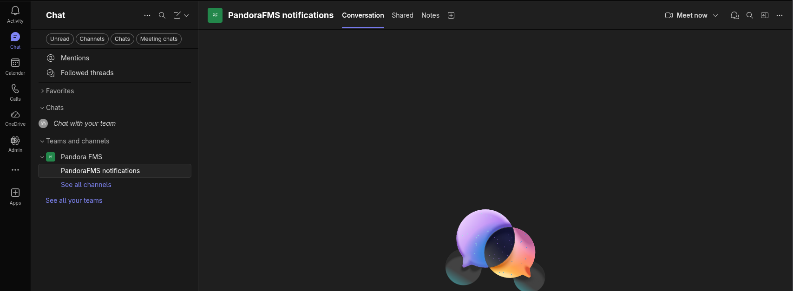
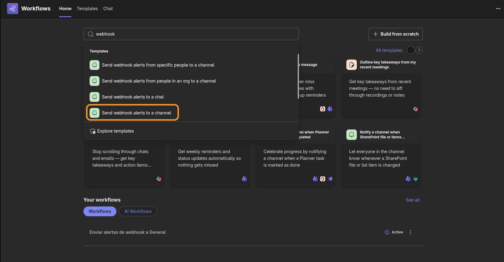
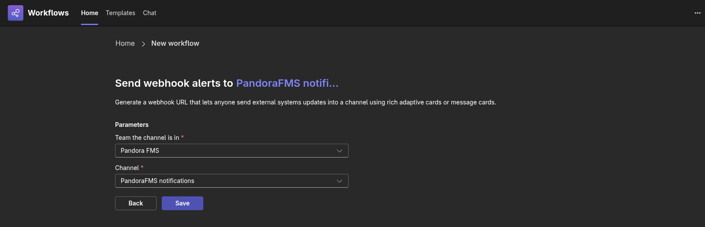
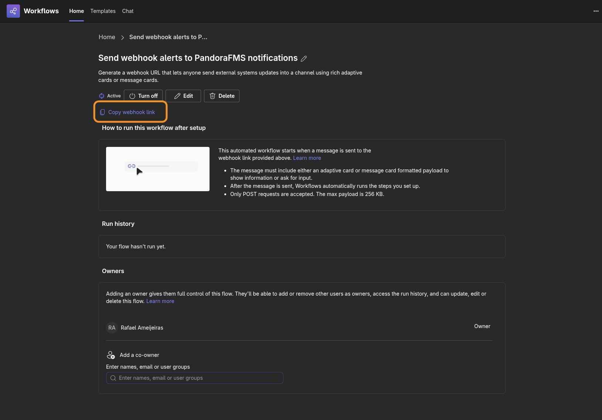

Integración con Microsoft Teams (Workflows)¶
Introducción¶
Esta integración envía las alertas de Pandora FMS a un canal de Microsoft Teams en forma de Adaptive
Cards. Un flujo de Power Automate expone un webhook para el canal, y el CLI pandora-msteams-workflow,
lanzado desde un comando de alerta de Pandora FMS, publica en él los datos de la alerta. Resulta útil
cuando se quiere que las alertas lleguen a un canal de Teams con el agente, el módulo y el estado
representados como campos legibles en lugar de texto plano.
Configuración en MS Teams: creación de un canal¶
Para integrar MS Teams con Pandora FMS primero debe ir al grupo donde serán enviados los mensajes de alerta. Una vez allí seleccione la opción Add channel:
{kind=link}
Coloque un nombre, una descripción opcional y los permisos para que cada miembro del equipo tenga acceso al nuevo canal, haga clic en el botón Add.
{kind=link}
Configuración en MS Teams: creación de un enlace de autorización¶
Microsoft Teams ha sustituido los "Incoming Webhooks" clásicos por Workflows (basados en Power Automate). Sigue estos pasos para obtener tu URL directamente desde un canal:
- Seleccionar el Canal: Ve al equipo y al canal específico donde quieres recibir las notificaciones de Pandora FMS.

- Acceder a Workflows:
- Haz clic en los tres puntos (
...) junto al nombre del canal. - Selecciona la opción Workflows
- Haz clic en los tres puntos (
- Crear un nuevo flujo:
- Haz clic en el botón + New workflow o Create.
- En el buscador de plantillas, escribe:
"Send webhook alerts to channel" -
Selecciona la plantilla que tiene ese nombre exacto.

4. Configurar el flujo: - Selecciona un grupo y canal para enviar el mensaje.

- Haz clic en Save. 5. Obtener la URL: - Una vez creado, aparecerá una pantalla de confirmación.

- Copia la URL que aparece dando al botón Copy webhook link. Esta es la URL que debes usar en el parámetro-uo--urldel script. 6. Finalizar: Ya está todo configurado, podemos volver a la ventana de chat.
{kind=link}
{kind=link}
{kind=link}
{kind=link}
Nota: Si necesitas recuperar la URL más tarde, puedes ir a la aplicación Workflows en la barra lateral de Teams, entrar en Manage workflows (Gestionar flujos) y editar el flujo correspondiente.
Configuración en Pandora FMS: creación de un comando de alerta¶
El paquete zip donde viene el binario, tambien contiene un fichero llamado test-exec.txt el cual contiene información sobre los parámetros adicionales que enriquecerán el mensaje enviado (subtítulo, color, botón de enlace web, etcétera).
Para crear un comando de alerta vaya a la Consola web de Pandora FMS y haga clic en Alerts -> Commands -> Create.
{kind=link}
A continuación defina los ocho campos necesarios más los dos últimos parámetros que son constantes. Asegúrese de que el campo número dos tenga marcada la casilla de campo oculto Hide y anote allí el enlace de autorización obtenido en la página anterior.
{kind=link}
El archivo test-exec que acompaña el Slack connector CLI contiene información que puede utilizar para rellenar estos campos. Haga clic en el botón Create para guardar el comando de alerta.
Configuración en Pandora FMS: creación de una acción de alerta¶
Las acciones de alerta permiten definir el cómo lanzar el comando. Vaya al menú Alerts -> Actions -> Create.
{kind=link}
Seleccione en Command el comando de alerta creado en la página anterior, los campos se rellenarán automáticamente. Sin embargo, siempre podrá personalizar los iconos o mensajes para los eventos de disparado y recuperación (Triggering y Recovery, respectivamente), por ejemplo.
{kind=link}
Para guardar, haga clic en Create. Para aplicar esta acción, bien sea a un Módulo o Política, establezca una plantilla de alerta para tal fin.
Parámetros y ejecución manual¶
Descargue desde el marketplace de pandorafms el CLI y descomprima en el servidor Pandora FMS (la ubicación recomendada es /usr/share/pandora_server/util/pandora-msteams-workflow o cualquier otra donde el servidor Pandora FMS tenga derecho de lectura y ejecución).Debe
Se recomienda realizar una prueba en la misma terminal de comandos con el siguiente formato:
Parámetros del Script¶
| Parámetro (Corto) | Parámetro (Largo) | Descripción | Requerido | Valor por defecto |
|---|---|---|---|---|
-u |
--url |
URL del Webhook de Teams. Generada por el flujo de Power Automate. | Sí | - |
-d |
--data |
Datos de la alerta en formato clave=valor separados por comas. |
Sí | - |
-t |
--alert_tittle |
Título principal que aparecerá en la tarjeta. | No | PandoraFMS alert fired |
-D |
--alert_desc |
Descripción o texto adicional de la alerta. | No | Alert Fired |
| - | --image |
URL de la imagen que se mostrará en la tarjeta. | No | Logo de Pandora FMS |
| - | --image_size |
Tamaño de la imagen (Small, Medium, Large, Stretch). |
No | Medium |
| - | --button |
URL a la que redirigirá el botón de acción. | No | https://pandorafms.com |
| - | --button_desc |
Texto que se mostrará dentro del botón. | No | Open web console |
Ejemplos de Uso¶
1. Ejemplo Básico¶
Envío de una alerta simple con los datos mínimos obligatorios:
./pandora-msteams-workflow \
--url "https://tu-webhook-url" \
--data "Agent=Server_Web_01,Module=CPU_Load,Status=Critical"
{kind=link}
2. Ejemplo completo con personalización¶
Personalizando el título, la descripción, el botón y el tamaño de la imagen:
./pandora-msteams-workflow \
--url "https://tu-webhook-url" \
--data "Hostname=DB-Server-05,IP=10.0.0.50,Error=MySQL service is down" \
--alert_tittle "CRITICAL: Database Failure" \
--alert_desc "The database service has stopped responding. Please check immediately." \
--image "https://img.icons8.com/color/96/error.png" \
--image_size "Large" \
--button "https://tu-consola-pandora.com/index.php?sec=estado&sec2=lista_agentes" \
--button_desc "Open PandoraFMS Console"
{kind=link}
Funcionamiento interno del Parámetro --data¶
El parámetro --data procesa una cadena de texto y la convierte en una lista de "Facts" (hechos) dentro de la Adaptive Card de Teams.
- Formato correcto:
Nombre=Valor,OtroNombre=OtroValor - Nota: Evita usar comas (
,) o signos de igual (=) dentro de los valores, ya que el script los usa como delimitadores.